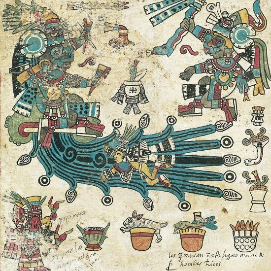
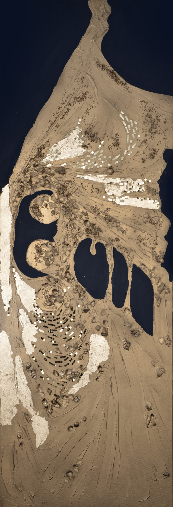
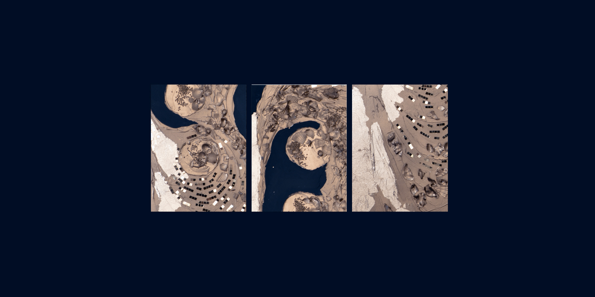

Tlaloc Tlamacazqui // Dieu des Eaux et des Points Cardinaux

Le premier Soleil, Tezcatlipoca, dura 676 ans ; le deuxième, Quetzalcohuatl, eut même durée.
Quant au troisième, Tlaloc, pendant le règne duquel on n'eut à manger que les graines d'une céréale aquatique, il ne dura que 364 ans.
Cet âge du monde prit fin par une pluie de feu, tlachinolli, lancée par Quetzalcohuatl.
Enfin, le quatrième Soleil, Chalchihuitlicue, épouse de Tlaloc, éclaira pendant 312 ans ; son règne finit par un déluge.
— Les Traditions de l'Amérique ancienne, Fernand Schwarz
été 2026
Générosité continue et circulaire

Paris 2026
150 × 50 cm
Peinture Acrylique / Medium / Divers sur Toile

Tlaloc // Dieu des Eaux et des Points Cardinaux
Sur la tête, le dieu portait un grand plumage, semblable à une couronne, fait de plumes d'un vert éclatant, très belles et très précieuses. Autour du cou pendait un collier de grosses pierres vertes, les chalchihuitl, dont le centre était orné d'une émeraude ronde montée en or. Ses oreilles portaient encore des pierres vertes avec des pendants d'argent ; ses poignets et ses chevilles étaient ceints d'autres rangs de pierres. Il n'existait pas d'idole plus richement ornée, tant les habitants de la cité accumulaient sur elle leurs plus somptueuses offrandes.
— Diego Durán, Historia de las Indias de Nueva España